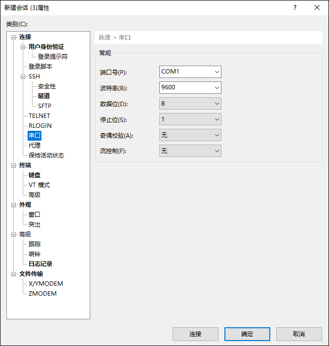

l登录系统
NGFW支持的本地登录方式为通过Console口登录。通过Console口登录到NGFW，可以使用命令行方式对NGFW进行一些基本的设置，用户在初次使用NGFW时，通常都会登录到NGFW更改出厂配置（如接口IP地址等）。这里将详细介绍如何通过Console口连接到NGFW。
| 步骤1 | 将Console口控制线的RJ45接口端和NGFW设备的Console口相连接，DB-9接口端和管理主机的串口相连接（部分产品无RJ45接口形式的Console口，需要使用DB9-DB9 Console控制线）。 |
| 步骤2 | 将管理主机与NGFW设备通过Console口物理连接后，需要使用终端管理软件如Xshell、SecureCRT等进行网络层面上的连接。连接前，管理员需要在软件内配置串口的属性值，具体参数如下表所示（以Xshell为例）。 |

参数 |
值 |
|---|---|
端口号 |
选择管理主机的COM口端口号。COM口即串行通讯端口(cluster communication port ),简称串口。查看管理主机COM口端口号的方法：（以Win10为例）在管理主机桌面右键选择 ，打开“计算机管理”窗口，然后选择 可查看COM口使用的端口号。 |
波特率 |
9600 |
数据位 |
8 |
停止位 |
1 |
奇偶校验 |
无 |
流控制 |
无 |
成功连接NGFW后，终端界面会出现输入用户名和密码提示。直接输入用户名/密码，即可登录到NGFW。
| 步骤3 | 登录后，用户便可使用命令行方式对NGFW进行配置管理等操作。 |
l按需求开启各种方式管理服务
从Console口本地登录NGFW后，管理员可以通过命令行对NGFW进行一些必要的设置，如更改、添加接口IP，添加其他的远程管理方式（包括“WebUI管理”、“TELNET”和“SSH”），方便对NGFW的管理维护。
本节以设置WebUI管理方式为例介绍如何使用命令行添加管理方式。另外，管理员还可以使用浏览器通过feth0（或MGMT）接口对NGFW进行设置。这要求管理主机与feth0（或MGMT）的缺省出厂IP处于同一网段。
用户可通过NGFW的任一物理接口远程管理NGFW，但是在此之前，管理员必须为此物理接口配置IP地址作为远程管理NGFW的管理地址，同时开启该接口所在区域的WebUI服务及SSH服务。命令行语法如下：
network interface <string> ip add <ipaddress> mask <netmask>
命令描述：
配置接口IP地址。
参数说明：
string：NGFW物理接口名称，字符串，例如feth10。
ipaddress：IP地址，如192.168.91.22。
netmask：子网掩码，如255.255.255.0。
pf service add name <telnet|webui|ssh> area <string1> addressname <string2> policyname <nstring>
命令描述：
开启管理服务。
参数说明：
telnet：接收Telnet协议远程管理请求。
webui：允许管理员通过WebUI对天融信防火墙系统进行配置和管理。
ssh：接收SSH协议远程管理请求，允许管理员通过SSH方式对天融信防火墙系统进行配置和管理。
string1：管理服务支持的区域对象，例如area_feth0。
string2：管理服务支持的地址对象。
nstring：该条策略项的名称。
network route add [family <ipv4|ipv6>] dst <string1> gw <gwaddress> [dev <string2>] [metric <number1>]
命令描述：
配置静态路由。
参数说明：
ipv4|ipv6：用于设置静态路由的类型，默认为IPv4静态路由。
string1：设定目标地址/掩码。字符串类型，添加IPv4静态路由时，格式为A.B.C.D/(0-32)；添加IPv6静态路由时，格式为X:X:X:X:X:X:X:X/(0-128)，其中X为一个4位十六进制整数。
gwaddress ：设定路由的下一跳。地址字符串，对于IPv4静态路由，格式为A.B.C.D；对于IPv6静态路由，格式为X:X:X:X:X:X:X:X，其中X为一个四位十六进制整数。
string2：设定路由出接口，可为物理接口或虚接口。字符串类型，表示出接口，如feth1。
number1：指定路由度量值，metric值越小，路由优先级越高。